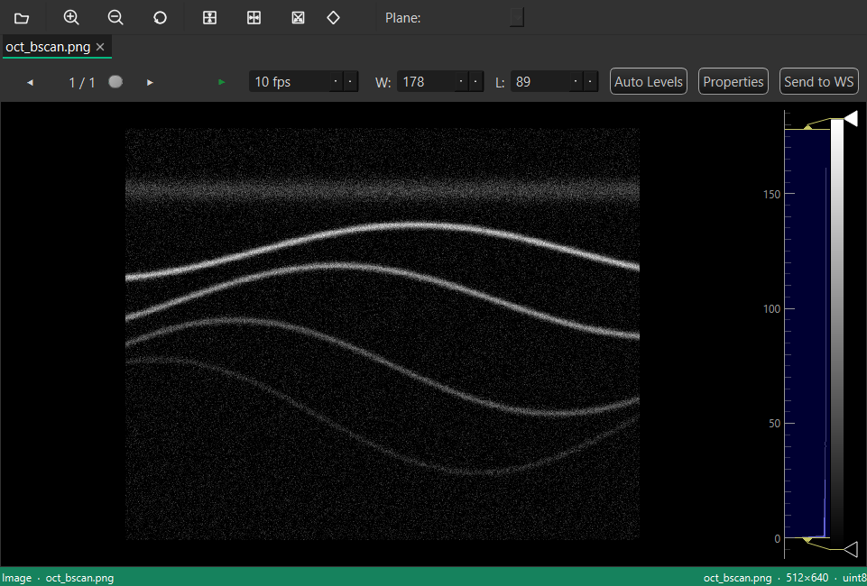
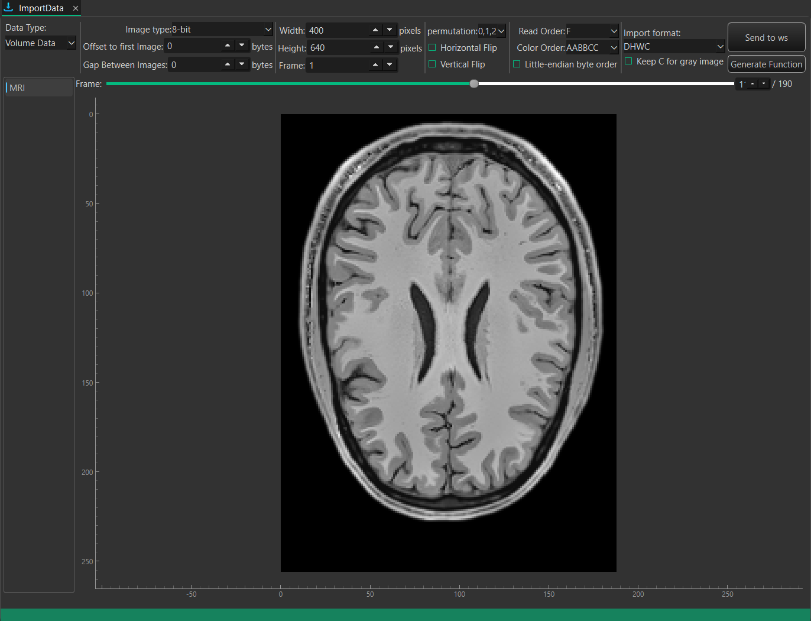
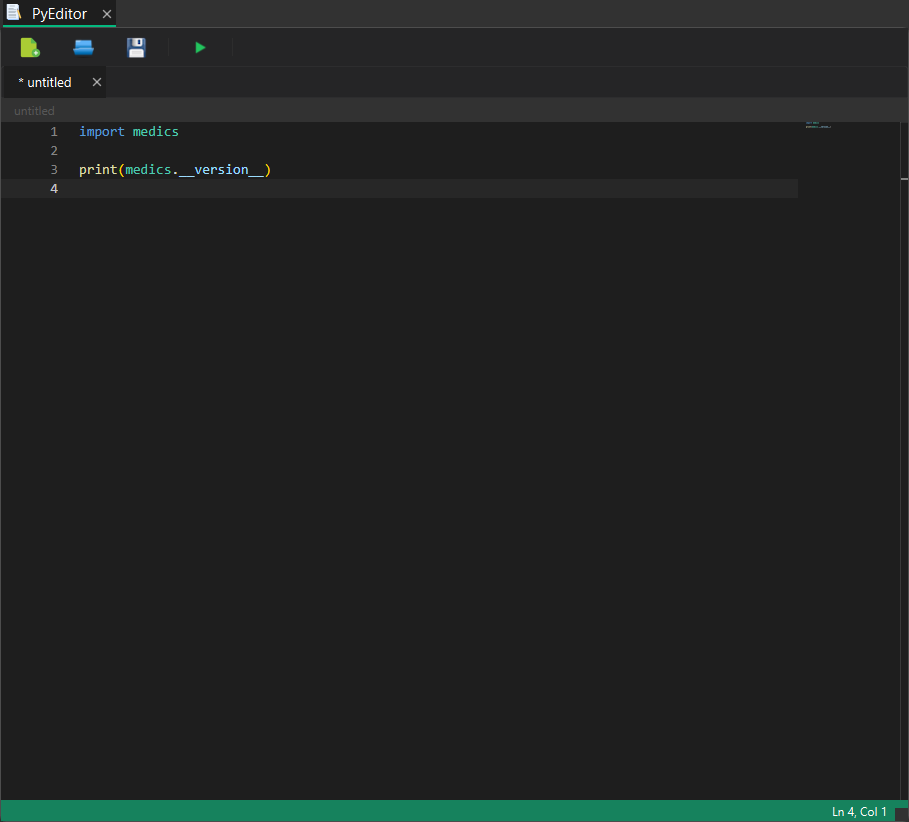
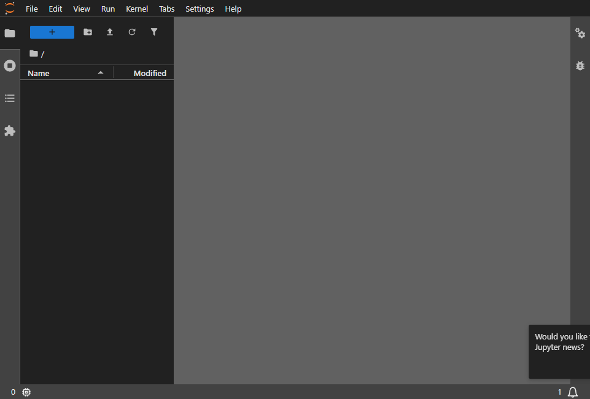

Toolboxes
Toolboxes are the built-in tools that ship with MedICS. Each opens as a tab in the central area — from the Toolboxes menu, from the activity bar, or by double-clicking a supported file in File Explorer.
| Toolbox | What it is for |
|---|---|
| FilePreview | Read-only preview of images, volumes, tables, Markdown and code. |
| ImportData | Load raw stacks, image sequences, DICOM, NIfTI, MAT/NumPy and video into the workspace. |
| PyEditor | A Python editor and terminal that run against the live workspace. |
| JupyterLab | The full JupyterLab UI in a tab, running MedICS's own Python environment. |
FilePreview
Preview any file without changing it: 2-D images, DICOM and NIfTI volumes, TIFF stacks, tables (CSV, TSV, Excel, Parquet), Markdown, and source code. For image and volume views you can move through slices, adjust window/level, zoom and pan, and apply flips, rotations and transposes.

Opening a file
- Double-click a file in the File Explorer — non-text files open here.
- Right-click a file and choose Open (or Open in FilePreview for a text file).
- Drag & drop one or more files onto the window from the operating system or the Explorer.
- Click Open… (Ctrl+O) on the toolbar and pick one or more files.
- Drop a variable from the Variables panel to preview data that is only in memory.
Each file opens in its own inner tab. Re-opening a file just activates its tab; the Welcome tab comes back when every file tab is closed.
Toolbar
| Button | Shortcut | What it does |
|---|---|---|
| Open… | Ctrl+O | Choose one or more files to preview; each opens in its own tab. |
| Zoom In | — | Magnify the view. |
| Zoom Out | — | Shrink the view. |
| Reset View | — | Fit the image or volume back into the window and clear any pan and zoom. |
| Flip Vertical | — | Checkable. Mirrors the image top-to-bottom. |
| Flip Horizontal | — | Checkable. Mirrors the image left-to-right. |
| Transpose | — | Checkable. Reflects the image across the main diagonal (swaps the axes). |
| Rotate 90° clockwise | — | Cycles 0° → 90° → 180° → 270°; the current angle is shown on the button. |
| Plane: | — | For volumes, which plane is displayed. A calibrated image offers axial / sagittal / coronal; a plain array offers YZ / XZ / XY. |
Zoom, flip, transpose and rotate are available for images and volumes; they are disabled for text, tables and Markdown. The transform buttons stay pressed while they are active.
What you can preview
| Kind | Formats |
|---|---|
| Images | .png, .jpg, .jpeg, .bmp, .gif, .webp, .ico, .ppm, .pgm, .pbm, .svg, and single-frame .tif/.tiff |
| Raw OCT volumes | .oct, .octa, .foct, .ssada |
| Data containers | .mat, .med, .h5, .hdf5, .npy, .npz |
| Volumes | .dcm/.dicom, .nii/.nii.gz, multi-page .tif/.tiff |
| Video | .mp4, .avi, .mkv, .mov, .webm, .wmv, .m4v, .mpg, .mpeg, .ogv, .3gp |
| Tables | .csv, .tsv, .tab, .xlsx, .parquet |
| Markdown | .md, .markdown, .mdown, .mkd |
| Text / code | .txt, .log, .json, .xml, .yaml, .yml, .py, .c, .cpp, .java, .js, .ts, .m, .r, .sh, .jl, .tex, .css, .html, .sql and more |
A .mat, .h5, .npz or similar container opens a small field tree on the left listing
every array it holds; select a field to display it. A single array is shown straight away. Anything
not listed above reports "Preview is not supported for this file type."
The image & volume viewer
| Control | What it does |
|---|---|
| ◀ / ▶ and the slice slider | Page through the volume; the counter reads current / total. |
| Play / Pause | Run the frames as a cine loop (disabled when there is only one slice). |
| fps spin box | Playback speed, in frames per second. |
| W: and L: | Window and level — the brightness and contrast of the display. These are display-only and are not saved into the data. |
| Histogram | A grayscale bar on the right; drag its handles for the same effect as the W/L spin boxes. |
| Auto Levels | Reset the window and level to the automatic range. |
| Properties | Open the File Properties dialog — file and data details. For DICOM, the important tags are shown under friendly labels. |
| Send to WS | Available for container and volume previews: send the data, as displayed, to the workspace (the plane and any flip/rotate are applied). |
| Scale bar | A length bar in the lower-left corner, drawn automatically when the file carries a physical calibration. |
Tables & Markdown
- Tables show a row-count label (N rows × M columns), sort when you click a column header, and filter as you type in the Filter rows… box.
- Markdown opens rendered, with Rendered / Source buttons to switch between the formatted view and the raw text.
Mouse & keyboard
| Action | Effect |
|---|---|
| Mouse wheel over the image | Previous / next slice. |
| Ctrl + wheel | Zoom. |
| Left-drag | Pan. |
| Right-drag | Zoom. |
| Right-click the view | The view's own menu (fit, reset). |
| Hover | Live pixel readout in the status bar. |
| PageUp / PageDown | Jump ten slices back / forward. |
| Home / End | First / last slice. |
| ← → ↑ ↓ | One slice back / forward. |
| + / - | Zoom in / out. |
| 0 | Fit to window. |
The status bar shows the preview kind and file name on the left, and the
pointer readout (for example (col, row) = value) on the right.
ImportData
Load images and volumes into the workspace. Choose how the source is structured, let the importer read and preview it, then send the result to the workspace. Imported data appears in the Variables panel.

Data type
| Mode | Use it for |
|---|---|
| Volume Data | A single volume read from a raw/binary stack file or a container (.mat, .npy, .npz, NIfTI, DICOM, video). |
| Image Sequence | A folder or a set of image files stacked into one volume, in file-name order. |
The parameters below the selector change with the mode.
Volume Data parameters
| Field | What it sets |
|---|---|
| Image type | The pixel type of the raw file — 8-bit, 16-bit Signed, 16-bit Unsigned, 32-bit Signed/Unsigned, 16/32/64-bit Real, 24-bit RGB/BGR, 32-bit ARGB/ABGR or 1-bit Bitmap. |
| Width / Height | The size of one frame, in pixels. |
| Frame | The number of frames in the stack. |
| Offset to first Image | Bytes to skip at the start of the file before the first frame (for a header). |
| Gap Between Images | Bytes to skip between consecutive frames. |
| permutation | How the three axes are ordered in the file (for example 0,1,2). |
| Read Order | F (Fortran), C or A — how the file's bytes fill the array. |
| Color Order | AABBCC (planar) or ABCABC (interleaved) for colour data. |
| Little-endian byte order | Tick when the file's bytes are little-endian. |
| Import format | The dimension order written to the workspace — DHWC (Depth, Height, Width, Channel) or HWCD. |
| Keep C for gray image | Keep the channel axis even for a grayscale image. |
| Horizontal / Vertical Flip | Mirror the volume as it is read. |
NIfTI, DICOM, MAT, NumPy and video files are read automatically; the raw parameters above apply to undecorated binary stacks.
Image Sequence parameters
| Control | What it does |
|---|---|
| Folder | Shows the folder being read. Type a path or use the buttons below. |
| Open Files | Pick individual image files to stack. |
| Open Folder | Load every file in a folder (natural-sorted, so 2 comes before 10). |
| Filter / Regex | Choose how the pattern is matched, then type it in the box (for example *.* or *.tif). |
| Select All | Tick every file in the list. |
| Range — from : to | Select a contiguous range of frames by index. |
| File list | The matched images, with check-boxes; only ticked files are stacked. |
Preview & transfer
| Control | What it does |
|---|---|
| Frame slider + spin box | Scrub through the frames of the loaded volume; the label reads current / total. |
| Image area | Shows the frame under the pointer; move the pointer to read the pixel value (X:… Y:… ▶ value). |
| Send to ws | Send the loaded volume to the MedICS workspace. |
| Generate Function | Write a Python loader for the current file — a ready-made function you can reuse. It opens a Generated Load Function dialog you can save. |
What you can import
- Image sequences — folders or sets of TIFF, PNG, JPEG and similar frames.
- Volume files — DICOM (
.dcm/.dicom), NIfTI (.nii/.nii.gz). - Containers — MATLAB
.mat, NumPy.npy/.npzand MedICS.medfiles. - Video —
.mp4,.aviand similar load as a stack of frames. - Raw/binary stacks — any file read with the Volume Data parameters above.
Drag & drop
Drop files or a folder anywhere on the window. Several image files (or a folder) are treated as an image sequence; a single volume file is opened as Volume Data.
Status bar
The green status bar along the bottom reports progress and messages ("File loaded successfully!", "N files found in the folder"), the pointer pixel readout, and — for a raw stack — a byte-match badge that confirms the header/offset settings add up ("✔ All bytes matched").
PyEditor
A Python editor in a tab, with syntax highlighting, code completion, an integrated terminal and a set of code-navigation tools. Run (F5) executes your script against the live console, so it can use the variables already in your workspace.

Toolbar & tabs
| Button | Shortcut | What it does |
|---|---|---|
| New | Ctrl+N | Open a new, untitled editor tab. |
| Open | — | Open a file in a new tab (.py is offered, but any file can be opened). |
| Save | Ctrl+S | Save the active tab; an untitled tab asks for a path first. |
| Run in Jupyter | F5 | Run the selection — or the whole file when nothing is selected — in the Jupyter console. |
Each file is a tab; a modified tab shows a *. Save As…
(Ctrl+Shift+S) writes to a new path. Right-click a tab for Close
Tab, Close Other Tabs, Close All Tabs and New Tab;
a breadcrumb bar above the editor shows the file's folder path, and Ctrl+` toggles the
terminal.
Editing features
| Feature | What it gives you |
|---|---|
| Syntax highlighting | Python and many other languages (C/C++, Java, JavaScript/TypeScript, JSON, YAML, XML, HTML, CSS, SQL, R, Shell and more). |
| Code completion | Python-aware suggestions as you type, with parameter hints for functions. |
| Hover documentation | Hover a name to see its documentation. |
| AI ghost text | Inline code suggestions; press Alt+\ to ask for one and Tab to accept it. |
| Find & replace | Ctrl+F to find, Ctrl+H to replace. |
| Brackets & folding | Auto-closing brackets and quotes, matching-bracket highlighting, and collapsible code blocks. |
| Minimap & line numbers | A code minimap on the right and a number gutter on the left. |
| Multiple cursors | Hold Alt and click or drag to add cursors. |
| Error markers | Python syntax errors are underlined in the editor. |
Code navigation
| Action | Shortcut | What it does |
|---|---|---|
| Go to Definition | F12 / Ctrl+click | Jump to where the symbol is defined. |
| Peek Definition | Alt+F12 | Show the definition inline, without leaving the file. |
| Find All References | Shift+F12 | List every use of the symbol in the References panel. |
| Rename Symbol | F2 | Rename the symbol under the cursor. |
| Go to Symbol | Ctrl+Shift+O | Jump to a class, function or variable by name. |
| Go to Line | Ctrl+G | Jump to a line number. |
The References panel opens when you run Find All References. It lists the symbol, line and file; double-click a row to open that file at that line. Breadcrumbs above the editor also let you walk up and down the file's structure.
Running code
Press F5 (or click Run in Jupyter) to run the selected text, or the whole file when nothing is selected. The code runs in the Jupyter console at the bottom of the window, so it sees the same workspace variables you do; the output appears in that console. A per-selection run is also bound to F9.
Integrated terminal
Ctrl+` shows or hides the terminal — a real shell inside a tab. The + New Terminal button starts another one; a shell picker offers Command Prompt, PowerShell, Windows PowerShell and Git Bash. Each terminal row in the list has buttons to Clear or Kill it, and right-clicking the list gives Rename, Kill Terminal and Clear. The terminal is a shell for convenience — use the Jupyter console when you want your workspace variables.
Reviewing agent edits
When the AI assistant changes a file you have open, PyEditor shows the changes inline with a small toolbar — ↑ / ↓ move between changes, and Accept, Reject, Accept All and Reject All keep or undo them.
Keyboard shortcuts
| Shortcut | Action |
|---|---|
| Ctrl+N | New tab |
| Ctrl+S / Ctrl+Shift+S | Save / Save As |
| F5 / Shift+F5 / F9 | Run in Jupyter (file or selection) |
| Ctrl+` | Toggle the terminal |
| Ctrl+F / Ctrl+H | Find / Replace |
| Ctrl+/ | Toggle line comment |
| F12 · Alt+F12 · Shift+F12 · F2 | Definition · Peek definition · References · Rename |
| Ctrl+Shift+O · Ctrl+G | Go to symbol · Go to line |
| Alt+\ · Tab | Trigger / accept an AI inline suggestion |
JupyterLab
The full JupyterLab interface, embedded in a tab. It runs on MedICS's own Python
environment, your workspace is available inside notebooks as ws, and it needs no setup —
notebooks, completions and the debugger work out of the box. Install it into MedICS's environment to
enable the tab (see Get started).

The two environments
When you start a new notebook or console from the Launcher, two environments are on offer:
| Environment | What it runs |
|---|---|
| MedICS (this environment) | The default. The same Python interpreter as MedICS itself, so every package MedICS uses is already importable. It is wired into the live application: your workspace is available as ws, and the familiar scientific names (NumPy, Matplotlib and friends) are ready to use — the same starting point as the Jupyter console. Figures render inline. Variables you create here appear in the Variables panel. |
| Python 3 (ipykernel) | A plain Python kernel, with none of the MedICS additions. Notebooks started here still run in the same interpreter, but there is no ws bridge and no pre-loaded MedICS namespace — use it when you want an untouched kernel, or as a fallback. |
Because the default is MedICS (this environment), a notebook behaves like the rest of MedICS: a volume you load in MedICS is visible in the notebook, and a variable created in a notebook shows up in the Variables panel. To switch, open the notebook's Kernel → Change Kernel menu and pick the other environment. Your notebooks are saved under the MedICS home folder and reopen with the tab.